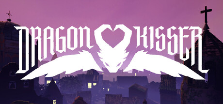
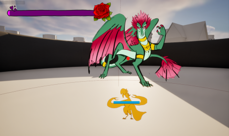
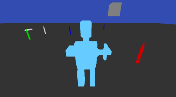
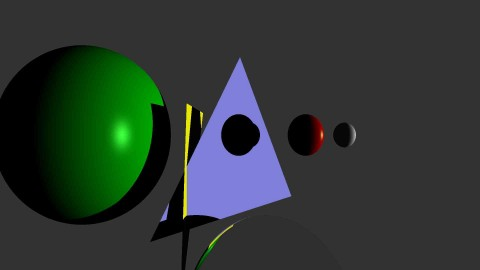

My Projects
Dragon Kisser | Unreal Engine

My Roles: Engineer | Architect | DevOps
Dragon Kisser is the 2026 capstone game for the Animation department at Brigham Young University. I worked on this project from April of 2025 to August 2026.
Play now on SteamCamera
I designed the modular camera system uses Unreal Engine's Camera Manager and Camera Modifiers. The camera manager handles normal camera movement following the controller rotation. It also maintains distance from the player character and changes the pitch and height of the camera during jump animations.
The lock on modifier keeps the player and boss always on screen.
The Dolly Zoom modifier does a Dolly ooom for the dance minigame.
The CPR modifier raises the camera and decreases its pitch dring the resuscitation minigame.
Player Jump
I also designed and implemented the player jump with Unreal Engines UCharacterMovementComponent in C++. It is easily modifiable, based on a float curve. The jump follows the curve, which can be edited to fine tune the height, speed, time, and overall feel of the jump.
Card System
The card system displays the early development movement of the player character and boss NPC. The team artists drew GIFs and poses, which the card system then swaps between to showcase early animations and positioning of characters.

Crayon Collector Robot | OpenGL

This was a personal project of mine to learn how to use the OpenGl API. I made a simple game where a robot collects crayons scattered on the ground. Programmed by me, using Glitter as a starting point.
View RepoPython Raytracer | Python

I made a raytracer for a graphics class. After not being able to solve some interesting misbehavior by C++ string streams, I decided I'd just do it in python. It may or may not have been a mistake, but it does run accurately.
View RepoDragn Labs
I spent three years working at Dragn Labs integrating transformer based AI models with video games.
DragnTown | Unreal Engine
I designed the entire front end of the project in Unreal Engine. Other Researchers built an extensive back end in python that used generative AI to direct the lives of NPCs. I built a threadsafe connection between the front and back ends, enabling the gameplay to be influenced by the input of LLMs.
Ongoing Projects
Space Sim rogue-like | Godot
I'm building a space sim. First, because I like space sims, and I think it'd be fun to make one. Second, because I want to learn Godot, and making a project is the best way to learn a game engine. To see my progress you can go to the repo here .
RayTracer | C++
After having made my python raytracer, I decided it should have been written in C++. Here is that version of the project. In the future I hope to make more versions of this project in Rust and other languages. I'm also interested in adding multi threading in order to render complicated scenes faster.
About Me
I make games in Unreal Engine, Godot, and Unity. I've been programming for over a decade, and working in Unreal Engine for over three and a half years. I'm competent writing code in C++, Blueprints, Python, C#, Gdscript, Java, and more. I enjoy reading books, dancing, and hiking (especially when I get to slowly fall down a cliff at the end (AKA rappelling)).
My Story
I make games because my sister solved a Rubik's cube.
As a young boy, I watched my sister solve a Rubik's cube and thought, "I want to do that." I learned how to solve a 2x2 Rubik's cube, then a 3x3, and eventually ended up writing my first "program". It was over a thousand lines of if statements in python that could add, subtract, multiply, or divide, any number from 1 to 10, by another number from 1 to 10. Years after that I picked up a Rubik's dodecahedron and I turned sides aimlessly until I realized that some of what I learned on a cube could be applied here as well. This realization let me solve almost all of the puzzle, until only the final layer (side of the d12) wasn't solved. I tried using the same algorithms that I'd used on the cube, but they didn't quite work right. I tried them repeatedly, tracking different pieces to see how they moved, then slightly modifying the algorithms until they did what I wanted, and I was able to solve the puzzle. Later in life I learned to apply the same principles to programming. I'll write code, see what it does, then modify it until it works correctly. When it doesn't work right, I'll track certain variables, debugging the code, or even go read source code for the functions I'm calling until I actually understand what the code I'm writing does. Finally, I started writing code in Unreal Engine, and began to make games.
That is why I make games because my sister solved a Rubik's cube.